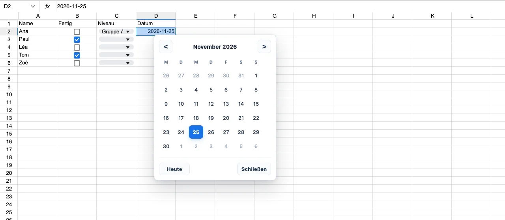

Kontrollkästchen, Listen und Kalender

Kontrollkästchen
Die Zellen auswählen, Einfügen › Kontrollkästchen. Ein Klick aktiviert oder deaktiviert; die Zelle hat den Wert TRUE oder FALSE.
=WENN(B2; "erledigt"; "offen")
=SUMMENPRODUKT(B2:B6; C2:C6)
=SUMMENPRODUKT(B2:B6; B2:B6)Die zweite Formel addiert die Werte der Spalte C, deren Kästchen aktiviert ist; die dritte zählt die aktivierten Kästchen.
Drop-down-Listen
Die Zellen auswählen, Einfügen › Drop-down-Liste….
| Quelle | Inhalt |
|---|---|
| Werte | die Optionen, eine pro Feld; Option hinzufügen; ohne Komma |
| Aus einem Bereich | ein Bereich, dessen Zellen die Optionen sind: Tabelle2!$A$1:$A$10 |
Ein Bereich ohne $ verschiebt sich von Zelle zu Zelle wie eine ausgefüllte Formel. Ändern sich seine Zellen, folgen die Optionen.
Die Zelle zeigt einen Pfeil; ein Klick öffnet die Optionen. Ein anderer Wert als die der Liste wird nicht angenommen.
Kalender
Ein Doppelklick auf eine Datumszelle öffnet einen Kalender: einen Tag wählen, den Monat mit < und > wechseln, Heute für das heutige Datum. Er öffnet sich auf jeder Zelle mit Datumsformat, auch einer leeren, außer sie enthält eine Formel oder ist gesperrt.
Für eine Datumsspalte, die mit dem Kalender ausgefüllt wird: sie auswählen und ihr das Format Datum geben.
Entfernen
Entf entfernt das Kästchen oder die Liste aus der Zelle samt ihrem Wert.
Kästchen und Listen werden in der Excel-Datei gespeichert; die Kästchen sind dort Excel-Kontrollkästchen.